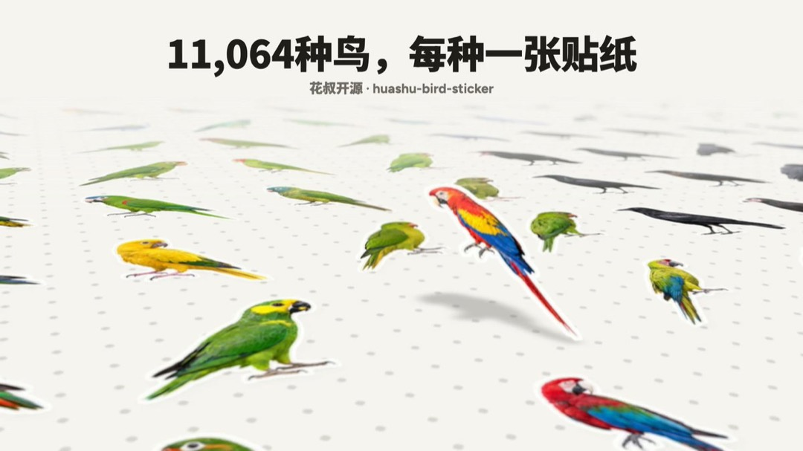
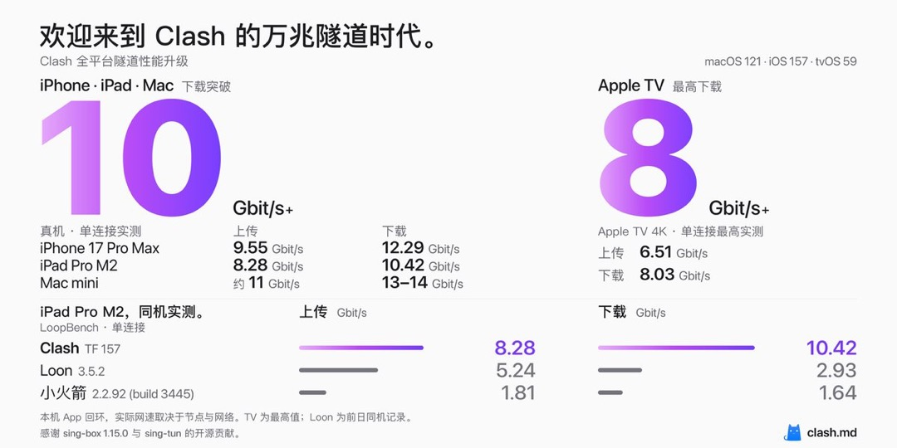

本期速览
01 GPT-6 Astra 成蒸馏新目标
02 Huashu 鸟类贴纸开源11064种
04 前端栈守卫约束AI依赖与技术栈
05 Mika 开源免Root手机Agent
07 企业RAG知识库落地难与破局
08 Clash 隧道重构提速至10Gbps
01｜GPT-6 Astra 成蒸馏新目标
来源（X） · @foxshuo · 2026-10-30 18:29
- 在Anthropic打击蒸馏并卓有成效之后，GPT-6 Astra成了被蒸馏的新宠模型。
- Kimi K3.1 Pro和DeepSeek V4.1-Flash 1017都对GPT-6 Astra进行了不同程度的蒸馏；
- OpenAI也开始效仿Anthropic，加大了对蒸馏行为的识别，而来自蒸馏方的线索则是，相比之下，OpenAI的模型仍是更容易被蒸馏的那个；
- 但要从中收集可用的训练数据，需要的提示数量是正常使用的10倍以上，为了避免触发检测，蒸馏方必须使用大量账号；
- 据说梁文锋起初不想在研发新一代DeepSeek V4模型时采用蒸馏方式，但在看到智谱等国内竞对取得成功后，他还是妥协了。
02｜Huashu 鸟类贴纸开源11064种
来源（X） · @AlchainHust · 2026-10-30 16:46
我花了10亿+的token，把全球现存的11064种鸟，全部变成了风格统一，设计出色的贴纸！！！主要目的是为了做我那个观鸟记录和了解鸟类的app。
但是what the hell，既然都做完了！！我就干脆把这全部素材都开源好了：https://github.com/alchaincyf/huashu-bird-sticker
我有一种预感，这个仓库会对全世界的鸟类爱好者和鸟类学习者产生长期有价值的影响，可能会是鸟类资源最有价值的资源库之一。

引用内容
花叔 @AlchainHust
03｜AwesomeRSI 开源RSI基准标准
来源（X） · @Chonghan_Liu · 2026-10-30 17:08
1. 我们发布了统一的 RSI Benchmark + Plugin 标准格式，目的是构建最全面的 RSI 榜单，方便大家快速复现和对比实验，格式 RFC 文件可以看下方链接。
目前 RFC 还在草稿阶段，我们十分欢迎大家提出宝贵意见，通过 PR 的方式来修订草案。
https://club.penguin.ooo/zh/
2. 我们将通过双周会的方式来同步开源社区最新进展，包括我们团队内部的实验成果和社区的动态，我们暂定为每周二晚上六点，前一天会在微信群发腾讯会议链接，欢迎社区里的同学自由参会，发言讨论。
3. 我们团队内部已经完成一部分的 Benchmark 整理、RSI 算法复现工作，并取得了初步结论，我们预计会在下周二的双周会上进行首次发布，欢迎大家来一起交流讨论。
社区仓库链接：https://github.com/Prism-Shadow/penguin-harness-community
Benchmark 仓库链接：https://github.com/Prism-Shadow/penguin-harness-benchmark
PenguinHarness 框架主页：https://penguin.ooo/
04｜前端栈守卫约束AI依赖与技术栈
来源（X） · @CaiXiang23766 · 2026-10-30 18:23
这个弹窗手写，下一个换一套组件库；接口缓存自己维护一份，状态又另起一套。一个项目写着写着，依赖就翻倍了。
所以我开源了 frontend-stack-guardrails，给 AI 定一套前端规矩：
1. 一个 Claude Code Skill：动手前先说清楚复用哪些组件、状态放哪
2. 固定技术栈：React 19 + TS + Tailwind v4 + shadcn/ui + TanStack Query + Zustand
3. 依赖检查脚本：没登记的包直接报错，要你写理由
4. ESLint 导入规则：业务代码不许直连 axios，只能走统一封装
复制一个文件夹进项目就能用，MIT 协议。
https://github.com/AliceDel66/frontend-stack-guardrails
你们用 AI 写前端，被它乱加依赖坑过吗？👇
05｜Mika 开源免Root手机Agent
来源（X） · @wangzan101 · 2026-10-30 18:47
对了，项目方案起源于和豆包的交流。
引用内容
王赞 @wangzan101
一句话交给它，它就能在你手机上把事干完。
复用你现有的登录态，不用额外授权，也不用 Root，更不用电脑。
你继续玩手机，它在后台干活，互不干扰。干完了通知你，你也可以随时随地再丢任务给它。
他能干什么？
1、操作你手机上的任何 App：发微信、总结群聊、小红书总结博主内容，在 BOSS 直聘批量打招呼、订闹钟、改设置，手机上的 App 都能操作，不用事先适配
2、内置浏览器：强大的 Browser use，搜索、筛选、读网页、批量操作，帮你把事干好的同时，节奏像真人一样，不容易被风控
3、悬浮胶囊：在任何 App 里都能随时呼起，和它对话，叫它干活，或者把这一屏发给它，问这个怎么回、帮我记下来
4、本地 Linux 沙箱：跑 Python、处理你发来的文件、Agent 写的脚本
不要 root，无需电脑，就跑在你的安卓手机上，真正的 phone Agent，替你在手机上把事都干了。
更多功能正在赶来的路上。
欢迎 star，下载使用，感兴趣也可以一起开发。
Github 地址：https://github.com/wangzan101/mika
06｜代码审查拆为主客观两层分工
来源（X） · @chenchengpro · 2026-10-30 14:49
1/ 作者把 review 分为 客观 review 和主观 review。客观 review 「管代码对不对」，包括 bug、安全漏洞、边界情况等，给好 prompt 的话，agent 做客观 review 已经比人强。主观 review 管「是不是该写这段代码」，这个只需要扫一眼，看方向对不对，不逐行读，也不找 bug。
2/ 主观 review 看两个问题，scope 和 Direction。scope 是看 agent 有没有改不该改的文件，因为 agent 常常越界，让改一处，它把无关文件甚至整个项目都动了。Direction 看方向对不对，比如用现成 npm 包还是自己造轮子，比如用 mygo 还是 nsgo，都是判断题，体现人的品味。
3/ 主客观的边界会移动。主观品味一旦写下来，agent 就能自己检查，也就从主观变成了客观。
4/ 所以，目前人不会被移出 review。基本思路是把客观 review 交给 agent，主观 review 留给人，然后把主观能写下来就变客观，逐渐减少人的参与。
引用内容
Hayden @haydenbleasel
中文译文
两种代码审查。https://haydenbleasel.com/writing/two-kinds-of-code-review
原文
Two kinds of code review. https://haydenbleasel.com/writing/two-kinds-of-code-review
07｜企业RAG知识库落地难与破局
来源（X） · @HavenZhao · 2026-10-30 13:02
原因大致有这么三个。
第一是入库。这是传统的问题，需要面对的。几百上千个文件夹、几个T的文档，大文件传输、扫描件和表格解析、版本去重、权限同步，光这一步就够开发人员喝一壶的了。
第二是没人愿意传。很多员工，私下里都有自己的比较好的文档，他本身不愿意传上去，或者工作比较忙，也不记得要传上去，传的人得不到回报也是一个原因，没什么动力。最后只好指派专人上传，很多散落在员工手里的有价值的文档就进不去了。
第三是回答。RAG取回来的是几段相似的文字，遇到要汇总、对比的问题，答得又片面又僵硬。
结果就是知识库里有用的内容少，用的人更少，形成了恶性循环。
想到的更稳的做法是先做小：只针对一个场景建专题知识库，用这个垂直场景的知识来先看效果，这样工作量会小很多，容易把控。另外，文档尽量对接它原来存放的地方，自动同步，做成客户端，能自动读取本地文件夹的那种，别要求大家额外打开浏览器去上传。另外光靠RAG不够，场景里的关键对象之间要建关系，数字类的问题走结构化数据。让AI能更好的找到关系，让问答更准确。
你们公司的知识库，现在有多少人在用？
08｜Clash 隧道重构提速至10Gbps
来源（X） · @ClashbyClash · 2026-10-30 15:09
Clash TestFlight 更新：iOS 1.0.14 (157)｜macOS 1.0.16 (121)｜tvOS 1.0.17 (59)
iPhone、iPad、Mac 和 Apple TV 上的 Clash 全部换成新的隧道架构：直接读写系统隧道，数据在内核里直接转发。iPhone、iPad、Mac 的隧道单连接下载突破 10 Gbps，Apple TV 4K 最高 8 Gbps；搬同样多的流量，处理器占用只有原来的三分之一到四分之一。
图中测的是隧道本身的上限（设备内回环，不经过公网）。实际网速取决于你的宽带和节点：直连和 SOCKS5、HTTP 节点提升最明显，加密节点的速度主要看节点本身和线路。
macOS 版过审之后就可以安装。
已加入测试的用户直接在 TestFlight 里更新即可。
申请加入测试：入群满 3 天后私聊 @clash_group_bot 发送 /start
群组：https://t.me/+gKVgTqnizzlhNWNl
